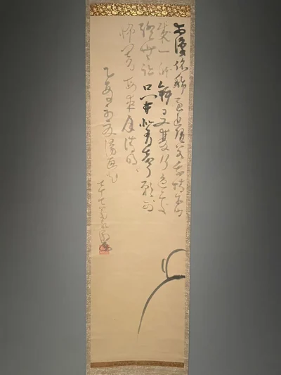
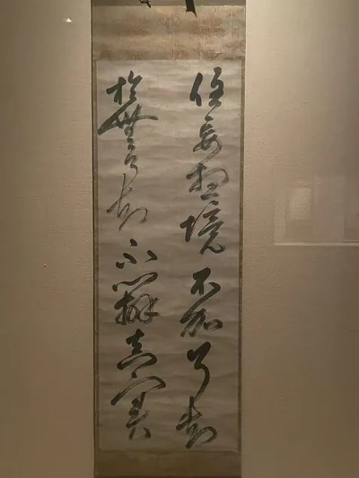
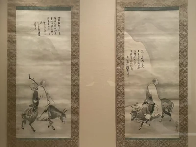
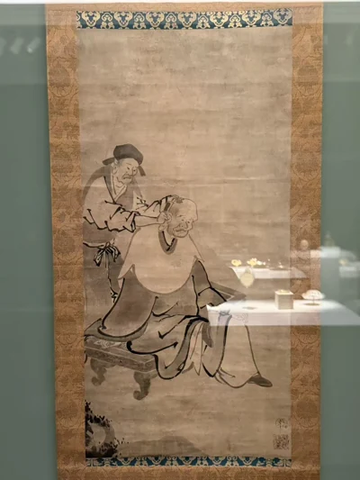

富士山
仙厓把一座山收进几笔墨线里；题字与山形相邻，让风景也带上了机锋。
JAPANESE ZEN PAINTING & CALLIGRAPHY
松声与月影
吾心似秋月，碧潭清皎洁。
无物堪比伦，教我如何说。——寒山《寒山诗集》
最初看禅画，我常摸不着头脑。寥寥几笔，大片空白，仿佛话才起头，便忽然止住；看不懂时，也曾疑心它有些故弄玄虚。
后来慢慢看下去，却越来越舍不得把目光移开。一道远山的轮廓，一个背身而坐的人，一只伸长手臂的猿，都像还留着半句话。墨迹到这里停了，山水却仿佛仍向纸外延伸。那些未曾落笔的地方，可以是云，是水，也可以只是片刻的寂静，让自己的心事轻轻落下。
我渐渐喜欢上这种未尽。不急着为每一笔找到答案，只愿在画前多停留一会儿。纸上空着的地方，原来容得下这样长的回味。
01
山峰、背影与伸向空处的手臂。形象简到几笔，仍各有重心。
仙厓把一座山收进几笔墨线里；题字与山形相邻，让风景也带上了机锋。

达摩几乎只剩一段轮廓，却没有消失：豪潮让空白参与了人物的出现。

月亮没有画出来，两只猿却仍伸手向它：若冲用一个悬着的动作，把寻找与误认留在了纸上。
02
经句进入纸面，连带、飞白与停顿也进入阅读。

八个字从经文进入纸面：梦窗疏石把“应无所住而生其心”写成了一件可以驻足观看的墨迹。

这段《圆觉经》书写提醒人：不必在每一层心念之上，再添一层抓取与判断。

“一心不生，万法无咎”：八字的浓墨与飞白，让一句熟悉的禅语重新显出书写的身体感。
03
从修行的譬喻到剃发的日常，人物不只以端坐的姿态出现。

从骑牛归家到人牛俱忘，一卷修行叙事在人物、空圆与重新出现的人间之间展开。

一位倒骑牛，一位骑着驴：狩野内膳画出身体，泽庵的题赞又为这对异人添入另一层声音。

寒山面向我们，拾得转过身去；蕪村让这对熟悉的禅门异人，以不同的姿态彼此相伴。

剃发的瞬间，衣袍随着身体起伏；一次日常照料，也成为禅院生活的图像。
04
赴日中国僧人的书画，与日本禅僧笔下的唐诗相邻。
05
茶人肖像、真言宗僧书与近代观音画，让禅的邻近世界也进入观看。
禅画不是把所有简笔、空白与佛教题材装进同一个盒子。慈云、寂严属于真言宗，豪潮属于天台宗；蕪村与铁斋则各有诗人、文人的背景。这些区别让并看更有意思，也使“禅宗书画”成为一条阅读路径，而非每件作品唯一的身份。
这些作品也因近代收藏而重新相遇。大都会的条目中，Cowles、Burke与Packard是三条各有记录的入藏线索；休斯顿的《影达摩》则来自Gitter–Yelen收藏。逐件记录中的赠藏、购藏与借展时间各自保留，不把同一收藏名称写成所有作品共享的来路。
每件作品下的“收藏与流转”保留已知节点，现场展签则记录观看时的著录。旧展签与今天馆方记录有所不同的地方，放在该件资料注中对读。
19 件／组